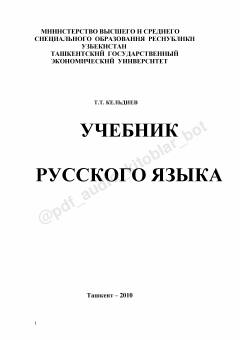

УРOliy o'quv yurtlari talabalari uchun rus tili darsligi.
Ushbu darslik nofilologiya yo'nalishidagi oliy o'quv yurtlari talabalari uchun mo'ljallangan bo'lib, rus tilining sintaktik konstruksiyalarini egallashga yordam beradi. Kitob talabalarda monologik nutqda sintaktik tuzilmalardan foydalanish ko'nikmalarini shakllantiradi va ma'noviy munosabatlarni o'rganishga qaratilgan.